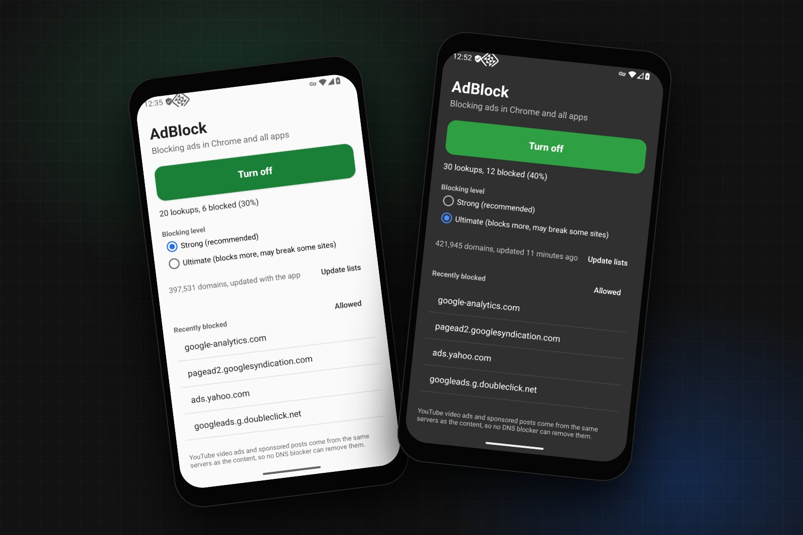
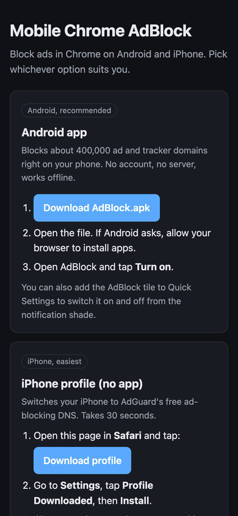
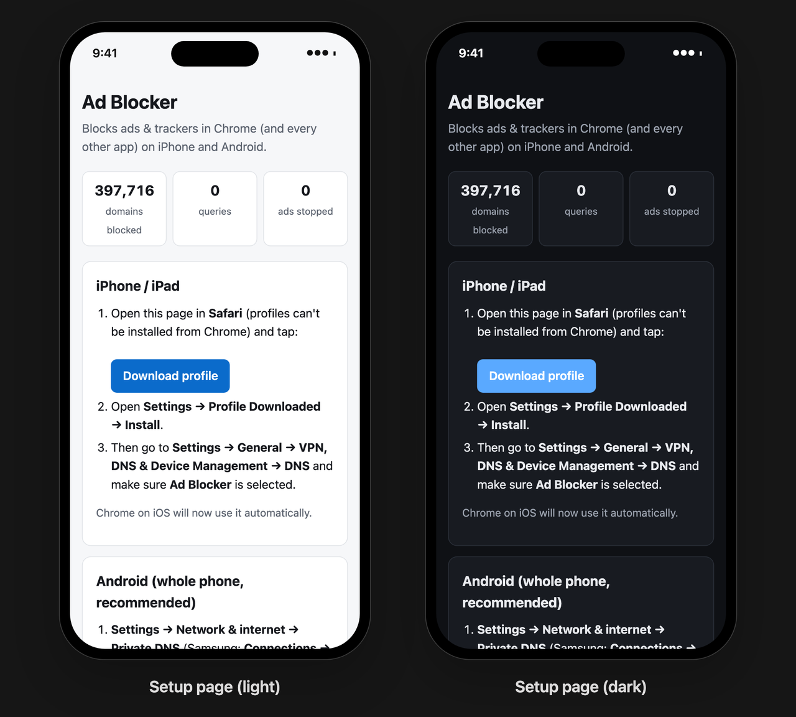
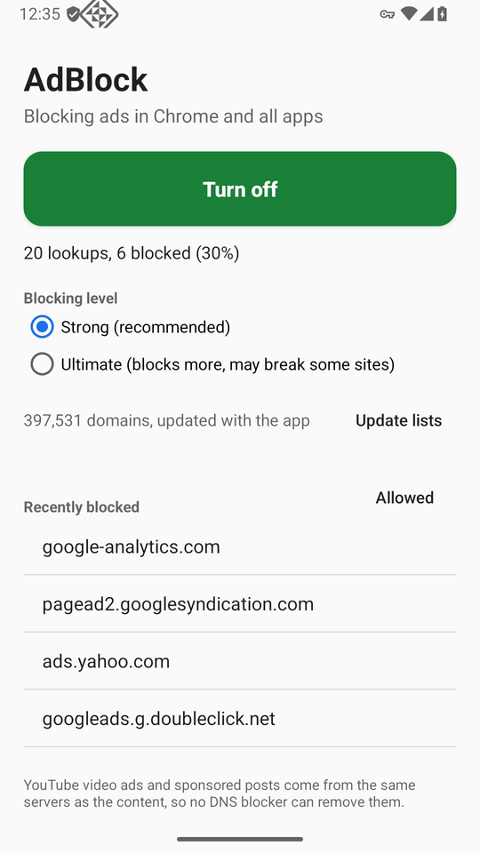
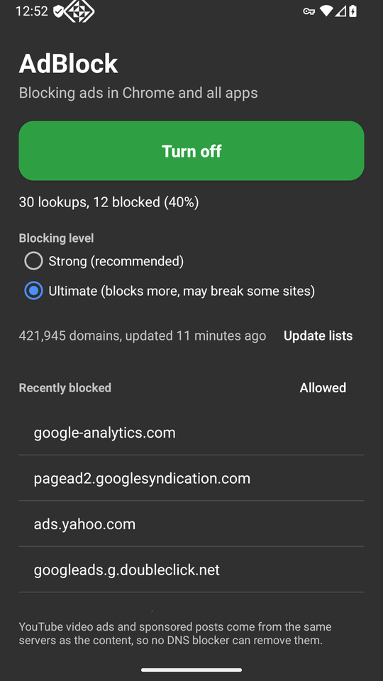

Mobile Chrome AdBlock
Ad blocking for Chrome on Android and iPhone, where extensions are not allowed

Overview
Chrome is the browser most people use on their phone, and on both Android and iPhone it cannot run extensions. There is no uBlock Origin for mobile Chrome. Mobile Chrome AdBlock blocks the ads anyway, by filtering the one thing every phone lets you control: DNS.
Before Chrome loads an ad from doubleclick.net, the phone has to look up where doubleclick.net lives. If that lookup comes back as 0.0.0.0, the ad never loads. The project does this filtering against about 400,000 ad, tracker and malware domains, and it works in Chrome and in every other app on the phone.
I built it as five options for five kinds of users, all in one repo: an Android app that blocks on the phone with no account and no server, an iPhone app built the same way, a free one-tap profile for iPhone, a Termux command to switch blocking on and off from a terminal (with a root mode that needs no app at all), and a Go DNS server for anyone who wants to protect a whole family from one VPS.
The source code is on GitHub at TYFSADIK/mobile-chrome-adblock, under the MIT license. GitHub Actions builds the Android APK, the iPhone IPA, server binaries for six platforms and a Docker image on every release. The download page for phones is at tyfsadik.github.io/mobile-chrome-adblock.
Five Ways to Use It
| Option | Phone | What you need | Where it filters |
|---|---|---|---|
| Android app | Android 8 and later | Nothing. Install the APK and tap Turn on | On the phone |
| iPhone profile | iPhone, iPad | Nothing. One tap in Safari | AdGuard DNS, a free public resolver |
| iPhone app | iPhone, iPad | A paid Apple developer account to sideload it | On the phone |
| Termux | Android | Termux, with the app or with root | On the phone |
| Your own server | Both | A small VPS and a domain | On the server, for every phone that uses it |


How It Works
Android only lets an app filter DNS through its VPN system, so the Android app is a VPN, but a very narrow one. It gives the phone a DNS server address, 10.111.222.2, that exists only inside the tunnel, and it routes that single address and nothing else into the tunnel. Every other packet the phone sends takes its normal path to the internet. That is why the app does not slow browsing down or drain the battery: the only traffic it ever sees is lookups.
Each lookup arrives as a raw IPv4 UDP packet. The app parses the DNS question out of it, checks the name and every parent domain against the blocklist, and either writes a 0.0.0.0 answer straight back into the tunnel or forwards the question to Cloudflare, Quad9 or Google. The forwarding socket is marked with protect() so the app's own lookup does not loop back into its own tunnel.
The iPhone app is the same design on Apple's Network Extension framework, and the Go server is the same idea on the internet side: a resolver that speaks DNS-over-HTTPS and DNS-over-TLS, so phones can use it as their encrypted Private DNS.
The Blocklists
Every option uses the same public, well-maintained lists. Strong is the default; Ultimate swaps HaGeZi Pro++ for HaGeZi Ultimate, which blocks more and occasionally breaks a site. Both levels include HaGeZi's list of public encrypted-DNS servers, so an app cannot dodge the filter by talking to its own DNS-over-HTTPS resolver.
| List | Strong | Ultimate | What it covers |
|---|---|---|---|
| StevenBlack hosts | Yes | Yes | Ads and malware, unified from several hosts files |
| AdGuard DNS filter | Yes | Yes | Ad networks and trackers, written for DNS filtering |
| HaGeZi Pro++ | Yes | Aggressive ads, tracking and telemetry | |
| HaGeZi Ultimate | Yes | The strictest HaGeZi level | |
| HaGeZi encrypted DNS | Yes | Yes | Public DoH and DoT servers that could bypass the filter |
How It Came Together
The first version was only the Go server. It worked, but it asked people to rent a VPS and buy a domain, and most people who want ads gone in Chrome will do neither. Each phase after that removed a requirement: the free profile removed the server for iPhone users, the Android app removed it for Android users, and the Termux command made it scriptable for people who live in a terminal.
Build Process, Step by Step
Extensions were out, so I listed what a normal user can change on each phone without root or jailbreak. Android has a Private DNS setting that takes any DNS-over-TLS hostname, and its VPN API lets an app see DNS packets. iOS accepts configuration profiles that switch the whole device to encrypted DNS, and its Network Extension API offers a packet tunnel. DNS was the one layer both platforms open up, so the whole project is built on it.
The server uses miekg/dns for DNS messages, answers DNS-over-HTTPS on /dns-query (RFC 8484, GET and POST) and DNS-over-TLS on port 853, and gets its certificate from Let's Encrypt automatically. Allowed answers are cached for their TTL. Blocked names get a real answer, not an error, so apps fail fast instead of retrying:
if r.bl.Blocked(q.Name) {
r.Blocks.Add(1)
return blockedReply(req) // A 0.0.0.0 or AAAA ::, TTL 300
}It also serves a setup page with live counts and generates the iPhone .mobileconfig profile on the fly, with UUIDs derived from the server's URL so reinstalling replaces the old profile instead of adding a second one. A one-line installer sets up Docker, opens ports 80, 443 and 853, and starts it.
For iPhone users with no server, I published a profile on GitHub Pages that points the phone at AdGuard DNS over HTTPS. It is honest about the trade-off on the page itself: this option uses AdGuard's blocklist, not the project's. One tap in Safari, one tap in Settings, and Chrome and every other app skip the ads.
The Android app is a VpnService that claims one /32 address. The phone sends DNS to that address; nothing else is routed in. The app itself is excluded so its own updates and lookups never pass through its own filter:
Builder()
.addAddress(VPN_ADDRESS, 32) // 10.111.222.1
.addDnsServer(DNS_ADDRESS) // 10.111.222.2
.addRoute(DNS_ADDRESS, 32) // the only route into the tunnel
.addDisallowedApplication(packageName)
.establish()The read loop polls the tunnel and a wake-up pipe together, so turning the app off returns instantly instead of waiting for the next packet. Forwarded lookups run on a small thread pool so one slow upstream does not hold up the rest.
A HashSet of 400,000 strings costs tens of megabytes on Android. Instead, each domain is stored as a 64-bit FNV-1a hash in one sorted LongArray: 8 bytes per domain, about 3.2 MB for the Strong level, and a binary search per lookup. A name is blocked if it or any parent domain is listed, unless it or a parent is allowed:
fun isBlocked(name: String): Boolean {
var d = name.trimEnd('.').lowercase()
var hit = false
while (true) {
if (d in userAllow) return false
val h = hash(d)
if (allow.binarySearch(h) >= 0) return false
if (!hit && block.binarySearch(h) >= 0) hit = true
val i = d.indexOf('.')
if (i < 0) break
d = d.substring(i + 1)
}
return hit
}Walking every parent means a listed doubleclick.net also blocks googleads.g.doubleclick.net, and an allow rule on a parent always wins over a block on a child.
The lists come in three formats: hosts files (0.0.0.0 ads.example.com), plain domain lists, and AdBlock-style DNS rules (||ads.example.com^, @@||good.example.com^). One parser reads all three. Rules with modifiers that only apply to certain clients or record types are skipped rather than guessed at, and anything with a wildcard or a path is dropped, because DNS only ever sees a hostname.
Two tricks get past a naive DNS blocker. The first is CNAME cloaking: a site points a subdomain of its own at a tracking company, so the name looks first party. After forwarding, the app and the server both read every CNAME target in the answer and block the lookup if any target is listed. The second is bypass: an app that brings its own DNS-over-HTTPS resolver never asks the phone. Blocking the known public DoH and DoT servers by name closes that door.
Termux cannot change the phone's DNS by itself, so the adblock command talks to the app: adblock on starts a small invisible activity that switches the VPN, and adblock status sends a broadcast that the app answers with on queries=1520 blocked=431. That also makes it work from Termux:Widget and Tasker.
On a rooted phone, adblock root-on skips the app entirely. It runs the Go server inside Termux on port 5354 and uses firewall rules to send every DNS packet on the phone to it, except Termux's own, so the server can still reach its upstream:
iptables -t nat -N ADBLOCK
iptables -t nat -A ADBLOCK -m owner --uid-owner $uid -j RETURN
iptables -t nat -A ADBLOCK -p udp --dport 53 -j DNAT --to-destination 127.0.0.1:$PORT
iptables -t nat -A ADBLOCK -p tcp --dport 53 -j DNAT --to-destination 127.0.0.1:$PORT
iptables -t nat -I OUTPUT -j ADBLOCK
# DNS-over-TLS on 853 and IPv6 DNS are rejected, so the phone falls back to port 53The iPhone app is an NEPacketTunnelProvider with the same shape as the Android service: a tunnel that routes only the fake DNS address, with matchDomains = [""] so every lookup on the device goes through it. A Python script turns the lists into a sorted binary file of hashes at build time, so the tunnel extension loads them with no parsing. It also adds "Turn on AdBlock" and "Turn off AdBlock" to Siri and the Shortcuts app, which is how iPhone users get the same on and off control that Termux gives Android users.
Five workflows build and test everything on every push: the Go server with its tests, a multi-arch Docker image on GitHub Container Registry, server binaries for Linux, macOS and Windows, the signed Android APK with lint and unit tests, and the iPhone IPA on a macOS runner. Pushing a version tag attaches all of them to a GitHub release, and the download page links to releases/latest, so it never goes stale.
Catching Disguised Trackers
Checking the question alone would let this lookup through, because metrics.shop.example is not on any list. The answer from the upstream resolver is what reveals it: a CNAME to a tracking domain. Replacing the whole answer keeps the address of the tracker away from the app, and the blocked list in the app shows it as metrics.shop.example (via shop.tracker.example) so it is clear why it was blocked.
Testing


I tested the Android app end to end on an Android 16 emulator, with Chrome and the command line:
- Ad and tracker domains such as
googleads.g.doubleclick.netandpagead2.googlesyndication.comresolve to0.0.0.0, and normal sites resolve as usual - Turning the app on and off from its button and from Termux (
on,off,toggle,status), including while the app was open - Switching to Ultimate and downloading the lists on the phone: 421,945 domains
- Termux root mode on a rooted emulator: the iptables rules send the phone's lookups to the blocker running in Termux, and ad domains come back as
0.0.0.0
Automated tests run in CI on every push: Go tests for the parser and matcher across all three list formats, parent domains, allow rules and scoped rules, and Kotlin unit tests for the Android side covering domain matching, blocked answers, IPv4 packet round trips and CNAME extraction. The iPhone IPA is built and checked in CI (arm64 binaries, the packet-tunnel entitlement and the bundled blocklist are inside), but it has not been run on a physical iPhone yet, because installing it needs a paid Apple developer account.
Testing found real bugs. When the app was already open, adblock on from Termux brought the app to the front instead of switching it, because the toggle activity joined the app's task; giving it its own empty task affinity fixed that. The Go server could not download its lists inside Termux, because Android has no /etc/resolv.conf for Go's resolver to read; the server now resolves list URLs through its configured upstream servers directly.
Challenges and Lessons Learned
The best fix is the one people will actually install. A self-hosted encrypted DNS server is the cleanest design, and almost nobody will rent a VPS and buy a domain to block ads. The on-device apps exist because the first version asked too much of its users.
Narrow permissions earn trust. "This app is a VPN" is alarming. Routing only one /32 address, and saying plainly in the app and the README that browsing never goes through it, turns a scary permission into an understandable one.
Platform rules shape the design. Android 14 requires a declared foreground service type; the obvious one was not allowed for this app, so it uses specialUse with a stated reason. If a user sets Private DNS to a specific provider, Android sends lookups there and skips the app, so the app detects it and tells the user. On iPhone, apps that use the VPN system need a paid developer account, which is why the free profile exists.
Memory matters on phones. Hashing domains into a sorted array cut the blocklist to a few megabytes and made lookups a binary search, with no measurable delay on a lookup.
Be honest about the limits. DNS blocking cannot remove ads served from the same servers as the content. The app, the README and the download page all say so instead of promising everything.
What DNS Blocking Cannot Do
- YouTube ads. YouTube serves ads from the same servers as the videos, so blocking one blocks the other. The same goes for sponsored posts on Instagram and Facebook. For YouTube, Brave, or Firefox for Android with uBlock Origin, can do what DNS cannot.
- Ads a site serves from its own domain. At the DNS level they look exactly like the site's content.
- Empty ad slots. The ad is gone, but the space the page reserved for it sometimes stays.
What I Learned
- The DNS wire format well enough to parse questions and build answers by hand, straight from raw IPv4 UDP packets
- DNS-over-HTTPS (RFC 8484) and DNS-over-TLS, and how Android Private DNS and iOS profiles use them
- Android's
VpnService: routing,protect(), foreground service rules, Quick Settings tiles and always-on VPN - Apple's Network Extension packet tunnel, App Intents for Siri and Shortcuts, and why the VPN entitlement needs a paid account
- Memory-efficient set membership with sorted 64-bit hashes
- iptables NAT redirection with owner matching on Android
- Shipping signed mobile builds and multi-platform binaries from GitHub Actions
What You Need
| To | You need | Notes |
|---|---|---|
| Use it on Android | Android 8 or later | AdBlock.apk, about 3.8 MB |
| Use it on iPhone | Safari | The profile on the download page |
| Run your own server | A Linux VPS and a domain | A free DuckDNS subdomain works; ports 80, 443 and 853 open |
| Build the Android app | JDK 17 or later, Android SDK | cd android && ./gradlew assembleRelease |
| Build the iPhone app | Xcode and XcodeGen | Plus a paid Apple developer account to install it |
| Build the server | Go | go test ./... && go build |
What Is Next
- Run the iPhone app on a physical device and publish the results
- Per-app statistics on Android: which apps make the most blocked lookups
- Scheduled list updates in the background, instead of a manual Update lists button
- A guide section for YouTube ads that points to browsers that can block them
Cite This Page
Citation formats
Plain text
Taki Sadik, "Mobile Chrome AdBlock", TYFSADIK, https://tyfsadik.org/work/applications/mobile-chrome-adblock.html (accessed 2026-10-31).BibTeX
@misc{sadik-mobile-chrome-adblock,
author = {Sadik, MD. Taki Yasir Faraji},
title = {Mobile Chrome AdBlock},
year = {2026},
url = {https://tyfsadik.org/work/applications/mobile-chrome-adblock.html},
urldate = {2026-10-31}
}APA
Sadik, M. T. Y. F. (2026). Mobile Chrome AdBlock. TYFSADIK. https://tyfsadik.org/work/applications/mobile-chrome-adblock.html